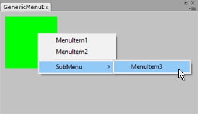

The GenericMenu lets you create a custom context and dropdown menus.
The example below opens an Editor window with a green area. Context-clicking the green area shows a context menu, which triggers a callback to the script when an item is selected.
.
using UnityEngine; using UnityEditor; using System.Collections;
// This example shows how to create a context menu inside a custom EditorWindow. // context-click the green area to show the menu
public class GenericMenuExample : EditorWindow { [MenuItem("Example/Open Window")] static void Init() { EditorWindow window = GetWindow<GenericMenuExample>(); window.position = new Rect(50, 50, 250, 60); window.Show(); }
void Callback(object obj) { Debug.Log("Selected: " + obj); }
void OnGUI() { Event currentEvent = Event.current; Rect contextRect = new Rect(10, 10, 100, 100); EditorGUI.DrawRect(contextRect, Color.green);
if (currentEvent.type == EventType.ContextClick) { Vector2 mousePos = currentEvent.mousePosition; if (contextRect.Contains(mousePos)) { // Now create the menu, add items and show it GenericMenu menu = new GenericMenu(); menu.AddItem(new GUIContent("MenuItem1"), false, Callback, "item 1"); menu.AddItem(new GUIContent("MenuItem2"), false, Callback, "item 2"); menu.AddSeparator(""); menu.AddItem(new GUIContent("SubMenu/MenuItem3"), false, Callback, "item 3"); menu.ShowAsContext(); currentEvent.Use(); } } } }
| AddDisabledItem | 向菜单添加已禁用的项。 |
| AddItem | 向菜单添加一个项。 |
| AddSeparator | 向菜单添加一个分隔符项。 |
| DropDown | 在给定屏幕矩形中显示菜单。 |
| GetItemCount | 获取菜单中的项数。 |
| ShowAsContext | 右键单击时在鼠标下显示菜单。 |
| MenuFunction | 回调函数，菜单项选中时调用。 |
| MenuFunction2 | 带有用户数据的回调函数，菜单项选中时调用。 |